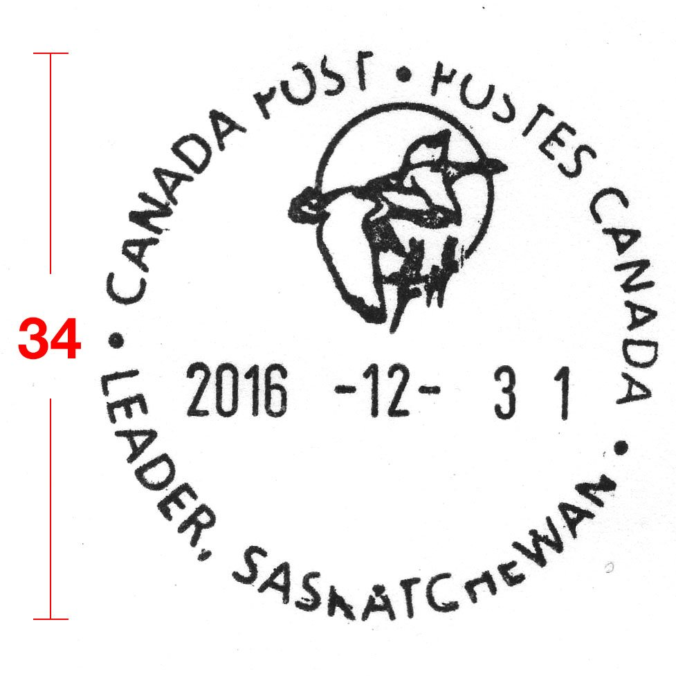

Leader PO pictorial cancel
Birds · 1st version
- Status
- Expired
- Run dates
- 2005-01-01 to 2016-12-31
- Design
- birds
- Ink colour
- Black
- Designer
- Unknown
- Post office
- Leader PO
109 1st St W
Leader, SK
S0N 1H0 - Subjects
- animal, bird
This cancel is retired, so the post office can no longer apply it. Covers with it turn up from dealers and other collectors.
 Leader PO2nd version
Leader PO2nd version Mendham POA Stop from Around the World
Mendham POA Stop from Around the World Fox Valley POFox, sand dune, maple leaf
Fox Valley POFox, sand dune, maple leaf Eastend POScouts
Eastend POScouts Eastend PO1st Scotty
Eastend PO1st Scotty